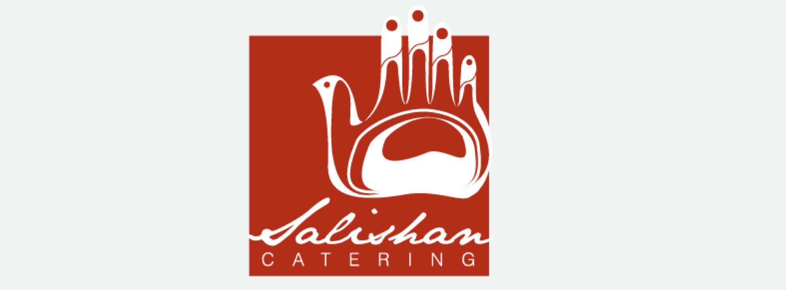
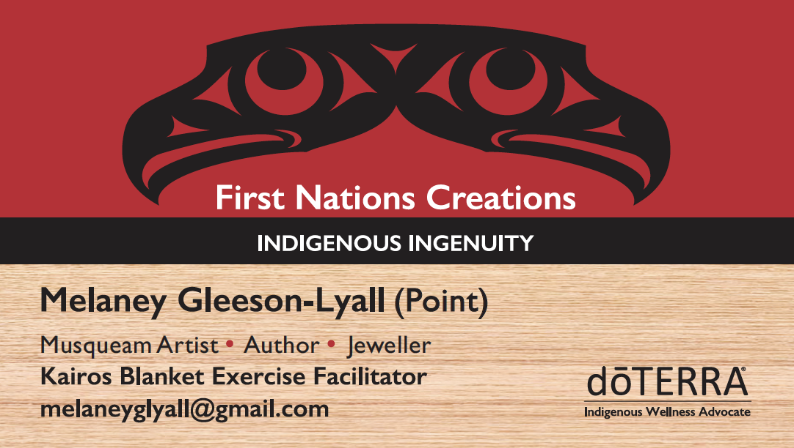
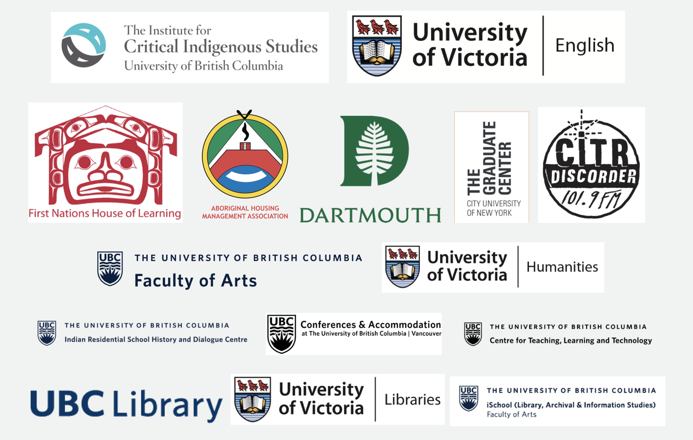
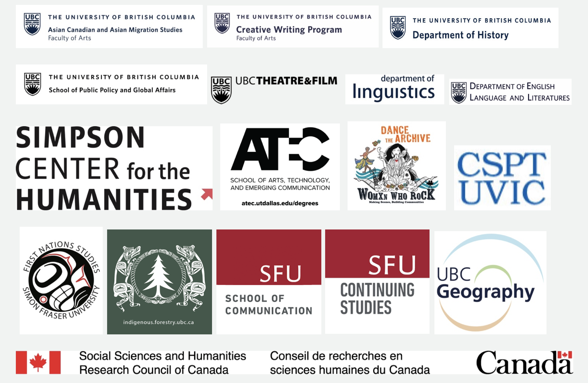
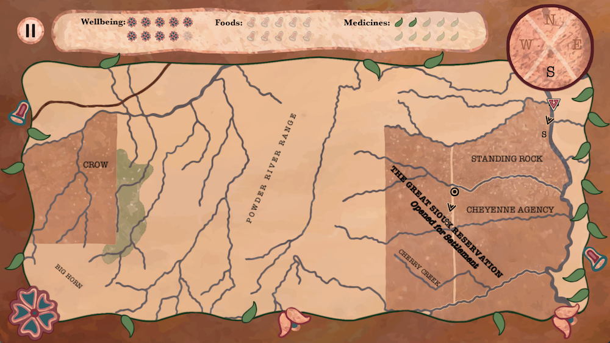

HASTAC 2019
"Decolonizing Technologies, Reprogramming Education"
Unceded Musqueam (xʷməθkʷəy̓əm) Territory
UBC Vancouver
16-18 May 2019
News and Updates
HASTAC 2019: “Decolonizing Technologies, Reprogramming Education” is happening this May on the traditional, ancestral, and unceded territory of the hən̓q̓əmin̓əm̓-speaking Musqueam (xʷməθkʷəy̓əm) people. Register at the conference, plan your travel, check the program, and learn more about the conference theme and its logo, organizers, partners and sponsors, and volunteers.
Below we’re sharing conference news and posting updates as they become available. We’ll see you on Musqueam territory very soon!
Plenary: Melody McKiver (14 May)
Melody McKiver is an Anishinaabe musician, media artist, traditional powwow dancer and artist, and arts educator of mixed ancestry who will give a plenary musical performance during the evening of Friday, May 17th. Melody is an enrolled member of Obishikokaang Lac Seul First Nation on their mother’s side, and their father’s family are settler Canadians of Scottish/Lithuanian origins. Melody currently lives and works in the small town of Sioux Lookout in Treaty #3, northwestern Ontario, and has previously resided in Ottawa, Toronto, and St. John’s NL. As a solo performer, Melody explores the range of the viola’s possibilities, spanning from minimalist to danceable, often incorporating laptop processing and looping. Their most recent release is Reckoning EP (2017), which was originally scored for the Article 11 theatre production of the same name and is written for solo viola and electronics. Within media arts, Melody works with digital video and photography to capture images of Indigenous resurgence, and uses this footage both editorially and within video and sound art. They have also worked on a number of documentary films that are currently in production. Melody’s works “Surveillapocalypse” (2014) and “Ga Waabmin Gaye / Nemolnek Elt Ni’nen” (2014; video below) have been screened and installed in Auckland, Brooklyn, Vancouver, Toronto, and Ottawa.
Thanks to Our Volunteers! (14 May)
We would like to thank our amazing team of HASTAC 2019 volunteers, led by volunteer coordinator, Tracey El Hajj (University of Victoria): Janni Aragon, Natalie Boldt, Kailey Fukushima, Stefan Higgins, Ashley Howard, and Sam Postuk (University of Victoria); Kashema Hutchinson, Gustavo Jimenez, Christina Katopodis, Sujung Kim, Adashima Oyo, and Siqi Tu (City University of New York); and Caolan Barr, Rachael Bullock, Janet Calderon, Jennifer Cameron, Patricia Derbyshire, Ben Dixon, Jaymyn La Vallee, Jessie Lackstein, Parboti Roy, Autumn Schnell, and Eric Zheng (University of British Columbia).
Salishan Catering (14 May)
The HASTAC 2019 team is incredibly fortunate to be working with Salishan Catering for the conference. Salishan Catering began in 1993 when the owner Denise Sparrow, a citizen of the Musqueam First Nation, applied her cultural knowledge to packaging and selling salmon. The salmon business flourished and eventually transformed into a catering business when her aunt directed her to set up a food stand at a pow-wow . . . thus began Salishan Catering. Salishan fuses traditional Musqueam cultural knowledge and foods with modern foods, creating a menu unique to the catering industry in the Lower Mainland of Vancouver.

Thank you, Denise! Salishan created an amazing menu for the conference, and all meals will be hosted in the First Nations Longhouse.
Plenary: Alana Sayers (14 May)
We’re delighted to announce that Alana Sayers (Hupacasath and Alexander First Nations; University of Victoria) will give a morning plenary on Saturday, May 18th. It’s titled, “Nuu-Chah-Nulth Literary Transformation Masks”: “This talk directly addresses the theme of this conference, ‘Decolonizing Technologies, Reprogramming Education,’ by connecting it to how I explore my own work. I offer a place-based Indigenous methodology to study Indigenous literature in both structure and content. I situate this methodology within my Nation’s epistemological and literary traditions through critical coastal consciousness, which takes the form of ‘Nuu-Chah-Nulth literary transformation masks.’ The form of transformation masks requires readers to better understand the responsibility of story and knowledge beyond the page. My methodology disrupts the individuation of reading and writing as technologies that fundamentally shape the relationship between readers and stories. For Nuu-Chah-Nulth stories to be fully understood, a reader must receive and understand the story beyond this medium. My work also explores how, by amplifying the voices of Indigenous Nations who are ocean people, we shift our understanding of stories and relationship to creation from land-based perspectives and stories that dominate Indigenous Studies and Indigenous Literature.”
Iron Dog Books (14 May)
We’re thrilled to confirm that Iron Dog Books is a vendor at HASTAC 2019. They are a mobile bookstore owned and operated by Cliff and Hilary Atleo, based primarily at Simon Fraser University, Burnaby, in Tsleil-Waututh, Sḵwx̱wú7mesh, and Musqueam territories (metro Vancouver). Centered on the core belief that books should be affordable and accessible, Iron Dog Books sells new and used fiction, non-fiction, and children’s and young adult books from a 2006 Freightliner step van that has been converted to a storefront on wheels. The shop also gratefully accepts donations of secondhand books, which allow Iron Dog Books to donate 20% of the retail value to rural and remote indigenous schools in Nuu Chah Nulth territory on the west side of Vancouver Island. Cliff and Hilary write: “As indigenous people (Nuu Chah Nulth/Tsimsian and Anishinaabe/Scottish) we care deeply about our home communities and strive always to move forward in a way that benefits our people and our environment. Book ownership and reading are powerful tools for self-determination and engagement—we are so pleased that Iron Dog Books can be part of the next chapter of bookshops.” Find Iron Dog Books in / near the First Nations Longhouse from 4 to 7pm on Thursday, from 10am to 7pm on Friday, and from 10am to 5:30pm on Saturday.
Plenary: Marisa Elena Duarte (14 May)
We’re excited to say that Marisa Elena Duarte (Pascua Yaqui/Chicana; Arizona State University) will give an afternoon plenary on Friday, May 17th. The title is, “The Absurdity of Canned Heat: Encountering Technocracy in the Digitization of Humanity”: “In 1921, Dr. Charles Eastman, Santee Dakota, wrote about the absurdity of ‘canned heat’: Euro-Americans attempting to improve their health by staying indoors and relying on mechanical solutions, rather than by developing deeper kinesthetic and spiritual relationships with the natural world. As a metaphor for the encounter between American Indian ways of wellbeing and early American industrialized notions of health, Dr. Eastman’s description of ‘canned heat’ marks the incommensurability of Native North American philosophies and capitalist techno-scientific notions of a good life. As civilized citizenry is increasingly linked to immersion in a technocratic way of being, Indigenous peoples face greater pressure to adopt ICTs for intrinsically relational tasks: sustaining family connections, tribal governance, storywork and teaching, restorative justice work, and radical political organizing. Understanding the absurdity of canned heat in the present gives us a glimpse of how we reconfigure the human being—and our expression of our humanity—under conditions of imperial technocracy.”
Change the Subject (14 May)
Directors Jill Baron and Sawyer Broadley will be screening their documentary, “Change the Subject” (US, 2019, 1 hour), at HASTAC 2019 on Friday the 17th at 4:15pm. This documentary tells the story of a group of students at Dartmouth College, whose singular effort at confronting anti-immigrant sentiment in their library catalog took them all the way from Baker-Berry Library to the halls of Congress. “Change the Subject” shows how an instance of campus activism entered the national spotlight, and how a cataloging term became a flashpoint in the immigration debate on Capitol Hill. Here’s a trailer for the documentary:
Plenary: Karyn Recollet (14 May)
We’re very happy to announce that Karyn Recollet (Cree; University of Toronto) will give an afternoon plenary on Saturday, May 18th. The title is, “Land-ing: City Land-based Knowledges for Those on the Move.” Recollet is a Cree woman originally from the Sturgeon Lake First Nation in Saskatchewan. Her research and writing explore Indigenous performance, hip-hop culture, and Indigenous hip hop feminism, with a particular focus on new Indigeneities produced in urban hub spaces as they shape solidarity movements and social activism.
First Nations Creations (14 May)
Author, artist, and jewelry designer, Melaney Gleeson-Lyall, from the Point family at Musqueam, is a vendor at HASTAC 2019. Melaney will be selling BC First Nations products as well as some of her own work. Find Melaney’s table at the First Nations Longhouse throughout the conference. Thank you, Melaney!

Plenary: Leanne Simpson (14 May)
We are delighted to confirm that Leanne Betasamosake Simpson (Michi Saagiig Nishnaabeg; Alderville First Nation) will give the closing HASTAC 2019 plenary on Saturday, May 18th. It’s titled, “As We Have Always Done: Indigenous Freedom through Radical Resistance”: “As We Have Always Done: Indigenous Freedom through Radical Resistance uses Indigenous interrogation, critique, and theory, and the grounded normativity these systems generate, as the intelligence system that instigates Indigenous resurgence, and is the process from which grounded, real world, Indigenous alternatives are manifested and realized. It employs Nishnaabeg storytelling practices as an algorithm—as coded processes that generate theoretical and lived solutions to the problems of occupation and erasure and to life on earth. It begins from a place of refusal of colonialism and its current settler colonial structural manifestation. It rejects dispossession, of both Indigenous bodies and land as the focal point of resurgent thinking and action. It continues the work of dismantling heteropatriarchy as a dispossessive force. It calls for the formation of networks of constellations of radical resurgent organizing as direct action within grounded normativities and against the dispossessive forces of capitalism, heteropatriarchy, and white supremacy. These are actions that engage in a generative refusal of an aspect of state control, so they don’t just refuse; they also embody an Indigenous alternative.”
Here’s a video for Simpson’s song, “How to Steal a Canoe,” which tells the story, on the one hand, of a young Nishnaabeg woman and an old Nishnaabeg man rescuing a canoe from a museum and returning it to the lake it was meant to be with, and on a deeper level, of stealing back the precious parts of us, that were always ours in the first place. Amanda Strong directed the video, and the song is on Simpson’s album, f(l)ight.
Plenary: Kim van der Woerd (14 May)
We’re very excited to announce that Kim van der Woerd (‘NAMGIS First Nation; Reciprocal Consulting; Simon Fraser University) will give an early morning plenary on Friday, May 17th in collaboration with Jennifer Reddy (Simon Fraser University). The title is, “Evaluation as a Strategy for Transformation and Learning”: “We will present our recent work that explores evaluation as a strategy for transformation and learning. It is the premise of our work that evaluation is undergoing (and driving) a transformation: from definitive answers to complexity-based understanding, and from formulaic approaches to managing tensions in the face of ambiguity and uncertainty. Effective evaluators and evaluative thinkers are increasingly embracing their roles as change-makers and innovators. To achieve this momentous shift in our own program evaluation work requires more than learning new tools and processes—it means expanding our ways of seeing and acting to navigate complex situations and generate transformative outcomes. In the era of the Truth and Reconciliation Commission’s Calls to Action, there is also an urgent need to recognize and re-center Indigenous worldviews and epistemologies in professional and academic fields. Instead of a single dominant Western perspective, evaluators must understand there are a multitude of perspectives and recognize the interconnections between them. This approach, known as ‘two-eyed seeing,’ is necessary when designing culturally responsive evaluation, which is an opportunity to reflect and contribute to the reconciliation movement, social justice, equity, and healing issues between Indigenous peoples and the rest of Canada.”
Critical Maker Faire (14 May)
There will be a Critical Maker Faire at HASTAC 2019! It’s scheduled for two consecutive sessions on Friday morning in The Nest. Learn more about it. Thanks to Radhika Gajjala, Kim Brillante Knight, Sarah Whitcomb Laiola, and Anastasia Salter for organizing this event!
Thanks to Our Sponsors (14 May)
We just want to take a moment to thank our sponsors. Thank you, sponsors! We very much appreciate your support of HASTAC 2019.
 
Full Program Now Online (14 May)
A full and final program for the conference is now online. Print copies will be available for free at the conference. Visit the registration table in the First Nations Longhouse to get your copy. The program cover and posters for HASTAC 2019 were designed by Ricky Castanedo Laredo, who is also the Art Department Manager of CiTR Station and the Art Director of Discorder Magazine at UBC. The logo for the conference is by Diamond Point. See you in two days!
Revised Program Now Online (29 Apr)
A complete, revised program for the conference is now online. If you are presenting at the conference and you see an error in the revised program, then please email corrections to info@hastac2019.org. If you are presenting in The Nest (see the revised program for locations), then you might find this floor plan of use. See you soon!
More Accommodations Available (17 Apr)
In response to demand, UBC Conferences and Accommodations is providing HASTAC 2019 participants with access to more on-campus apartments, studios, and suites, and the conference rates for accommodations have been extended to Friday, April 26th. You can book a room on campus now, if you’ve not already. Or learn more about the available apartments, studios, and suites. Conference rates range from $59 to $185 per night.
Non-Presenter Passes Are Sold Out (17 Apr)
Non-presenter passes ($40 for one day and $80 for three days) are now sold out. Some non-presenter passes may become available at the conference in mid-May. If so, then we will provide an update. Thank you for your patience.
Draft Program Now Available! (29 Mar)
You can read a draft program online in PDF. We’ll circulate the final program here in late April or early May. If you’re presenting at the conference and you see an error in the draft program, then please email corrections to info@hastac2019.org. Thank you!
Code of Conduct for HASTAC 2019 (22 Mar)
In this place and territory, we honour our commitments to ethical relationships and rigorous exchange of ideas that further the aims and sovereignties of Indigenous individuals, communities, and nations and the goals of “Decolonizing Technologies, Reprogramming Education.” As the host committee, we are seeking to create a space that is free from harassment and violence, physical or otherwise. We ask for your support in this, and we take our direction from the First Nations House of Learning’s mandate, which follows the Longhouse Teachings of Respect, Relationships, Responsibility, and Reverence. All of this is in keeping with longstanding protocols, relationships, and commitments established here. We hope attendees come with a generous spirit, a deep sense of ethics, and a genuine enthusiasm for the work we will all be doing together.
Adapted from the work of Dory Nason and Coll Thrush, NAISA 2017
Plenary: Jules Arita Koostachin (20 Mar)
We are excited to confirm that Jules Arita Koostachin (MoshKeKo Cree, Attawapiskat First Nation; Social Justice Institute, University of British Columbia) is scheduled to give the opening plenary at HASTAC 2019 on Thursday, May 16th. The title of the plenary is, “MooNaHaTihKaaSiWew: Unearthing Spirit.” Here’s a description of it: “The relationship between Indigenous ways of being and story resonate with collective and personal meaning, thus a comprehension of Indigenous epistemological approaches to our stories is fundamental in understanding how Indigenous documentary intersects with our positionality as Indigenous documentarists. Indigenous methodologies and documentary methods are intertwined, and documentary as a storytelling practice has proven to be an effective and powerful form of knowledge exchange, where we as storytellers have created socio-political change by shifting ways of thinking and humanizing our lived experiences. MooNaHaTihKaaSiWew as an InNiNeWak framework allows for an examination of the significance of our own their/herstories and cultural positionality, and how we begin to assert and articulate our stories ourselves, in turn providing an alterNATIVE perspective.” Check out more of Jules’s work: askiBOYZ.com and the short films, PLACEnta, NiiSoTeWak, and OshKiKiShiKaw, which is embedded below.
Plenary: Elizabeth LaPensée (8 Mar)
We are thrilled to confirm that Dr. Elizabeth LaPensée (Anishinaabe and Métis; Michigan State University) is producing a video plenary for HASTAC 2019. The video will be screened on Friday, May 17th. It’s titled, “When Rivers Were Trails: Sovereignty, Nationhood, and Relationality in an Adventure Game.” Here’s an abstract: “In what ways can a digital game reify Indigenous sovereignty, nationhood, and relationality? When Rivers Were Trails is a 2D adventure game from the Indian Land Tenure Foundation developed in collaboration with the Games for Entertainment and Learning Lab at Michigan State University as a compendium to the Lessons of Our Land curriculum. The game was created with Indigenous artists and musicians as well as over twenty Indigenous writers who express their communities in 1890 during the impact of allotment acts which divided lands and displaced nations. This talk describes design in When Rivers Were Trails, such as the adaptation of historical 1890s maps into a user interface conveying an Indigenous worldview of lands now referred to as the United States. Twelve maps act as a record of movement and relation making as the player travels through Minnesota, the Dakotas, Montana, Idaho, Washington, Oregon, and California, maintaining their physical, emotional, mental, and spiritual wellbeing with foods and medicines. They can contribute to resistances as well as trade with, fish with, hunt with, gift, and honor the people they meet. When Rivers Were Trails offers insight into how to represent Indigenous sovereignty through self-determined intentional game design.”

Image by, and used with permission from, Dr. Elizabeth LaPensée.
Child-Minding Services Available (7 Mar)
Osprey child-minding services will be available for the duration of HASTAC 2019, between 8am and 8pm each day. Rates are $20 per hour or $100 per day (for a maximum of eight hours per day, including a hot lunch). Space is limited and will be provided on a first come, first served basis, with registration required by April 1st. If you are interested in child-minding services, then please email us at info@hastac2019.org.
Registration Now Open! (17 Jan)
Early bird registration for “Decolonizing Technologies, Reprogramming Education” is now open. We encourage you to register soon. The early bird period ends 14 March 2019. Learn more.
Reserve Accommodations Now (17 Jan)
HASTAC 2019 secured room blocks at Ponderosa Commons and Walter Gage Residences, both on the Vancouver campus, and each quite affordable. Learn more. We recommend making reservations as soon as possible, as room availability is limited.
Jordan Wilson on qeqən House Posts (17 Jan)
Jordan Wilson, Musqueam curator and writer, takes us on a tour of the Musqueam house posts that exist across the UBC campus. (Care of The Ubyssey. Music by Podington Bear. Filmed and edited by Marina McDuff.)
We would like to acknowledge that the University of British Columbia is located on the traditional, ancestral, and unceded territory of the Musqueam people. We thank the Musqueam Nation for its hospitality and support of our work.
We would also like to acknowledge with respect the Lkwungen-speaking peoples on whose traditional territory the University of Victoria stands and the Songhees, Esquimalt, and WSÁNEĆ peoples whose historical relationships with the land continue to this day.
HASTAC wishes to express our deep gratitude to the Musqueam people for allowing us to engage digital territories on this unceded land. Changing the way we teach and learn means challenging the colonial foundations of education and technology. We are grateful for the opportunity to do this work here. Thank you.